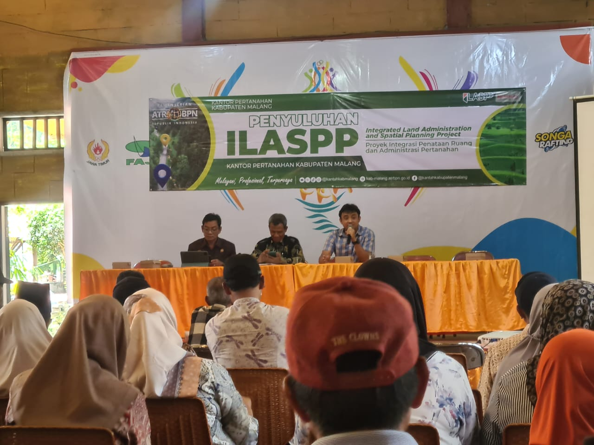

Penyuluhan Integrated Land Administration and Spatial Planning Project (ILASPP)
Pada tanggal 2 September 2025, Pemerintah Desa Pait bersama Kantor Pertanahan Kabupaten Malang (ATR/BPN) melaksanakan kegiatan sosialisasi pemasangan patok dalam rangka pembuatan tata letak geografi desa. Kegiatan ini merupakan bagian dari program ILASPP (Integrated Land Administration and Spatial Planning Project) yang bertujuan untuk meningkatkan ketertiban administrasi pertanahan dan penataan ruang wilayah desa.
Dalam sosialisasi tersebut, masyarakat diberikan pemahaman mengenai pentingnya pemasangan patok sebagai penanda batas tanah yang sah serta manfaatnya dalam mendukung tertib administrasi dan pembangunan berkelanjutan. Acara ini dihadiri oleh perangkat desa, tokoh masyarakat, serta warga pemilik lahan di wilayah Desa Pait.
Melalui kegiatan ini, diharapkan seluruh masyarakat dapat berpartisipasi aktif dalam proses penataan batas tanah agar ke depan tidak terjadi sengketa lahan serta mendukung pembangunan desa yang terarah dan transparan.
Berita Lainnya: BUMDes Desa Pait